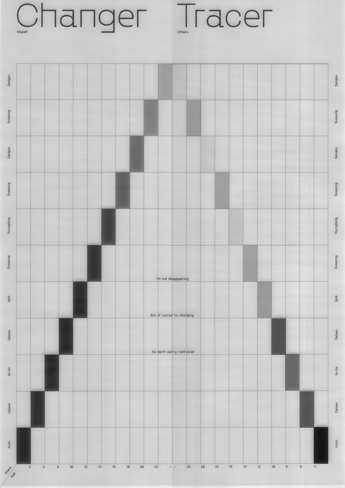
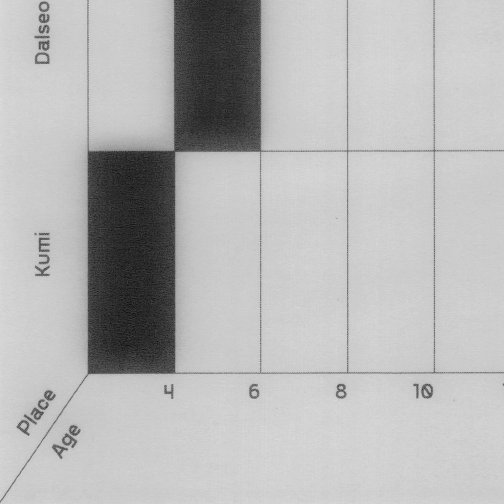
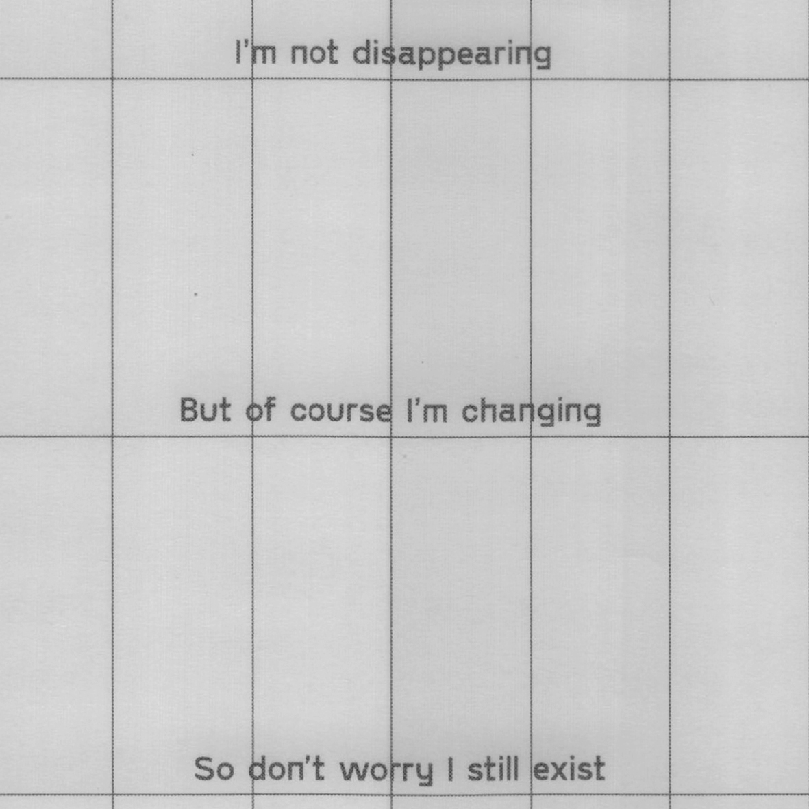
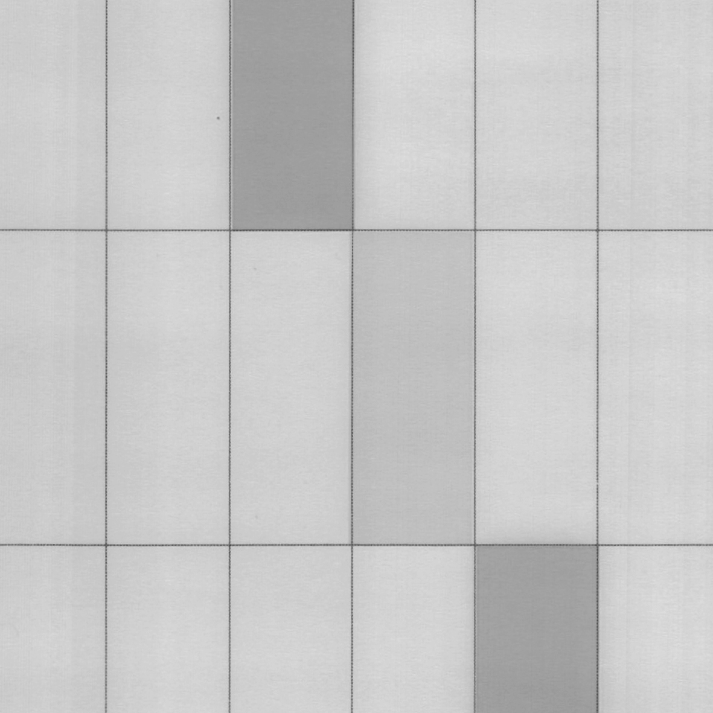
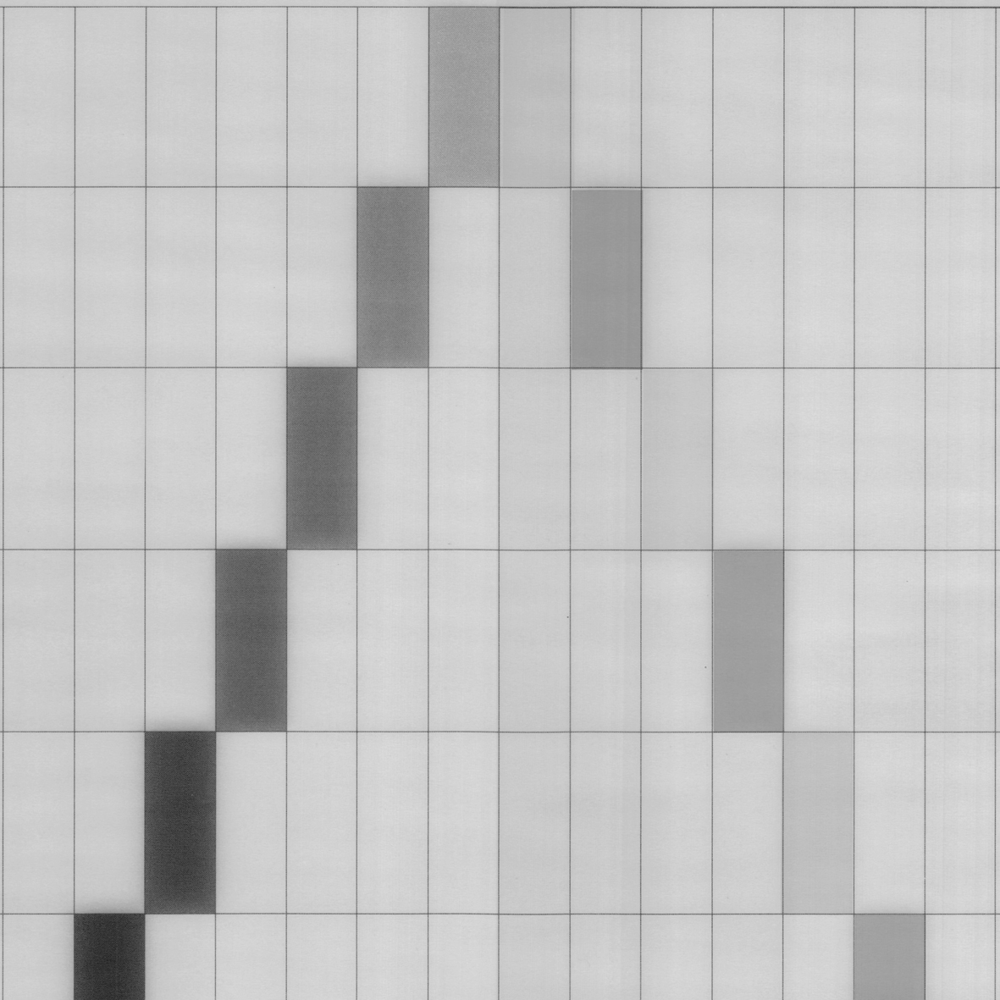
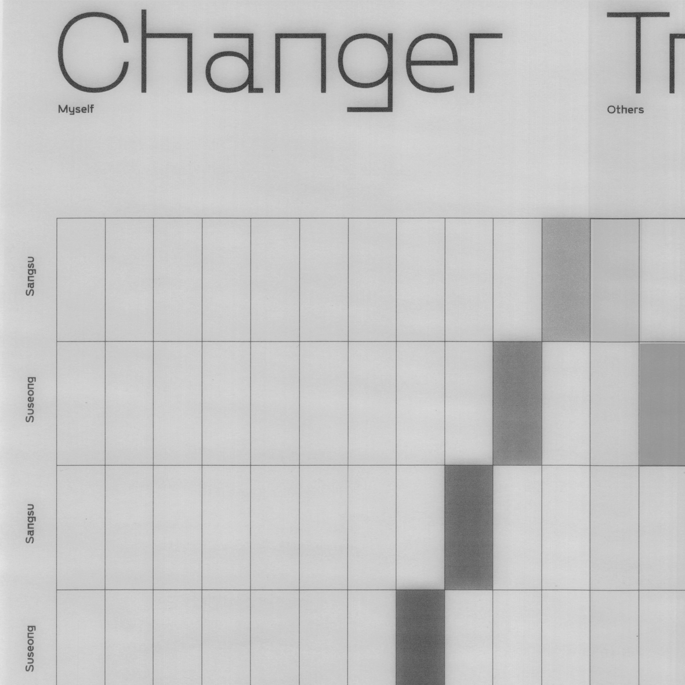
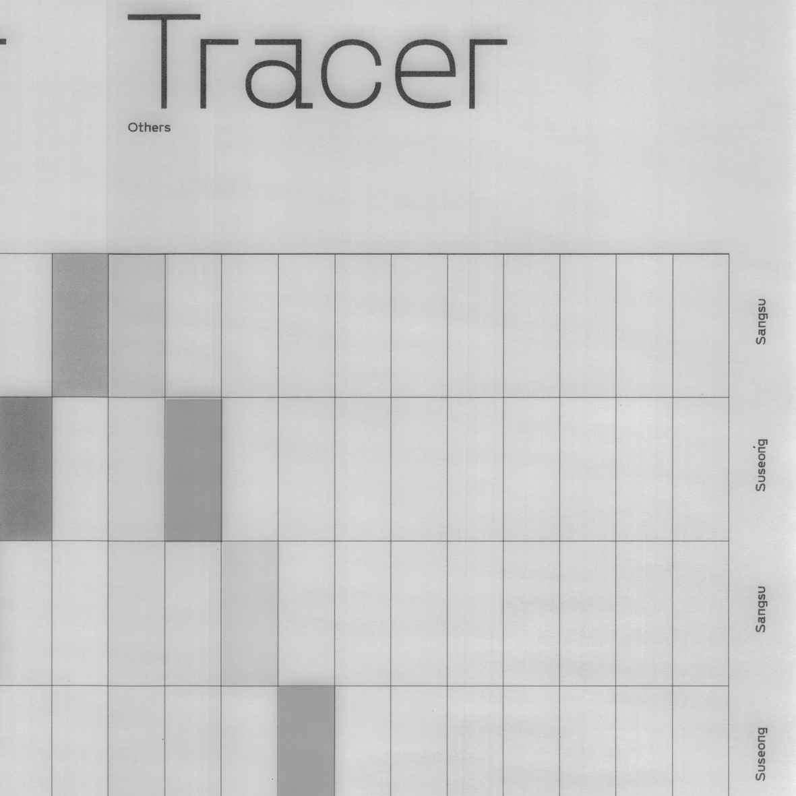
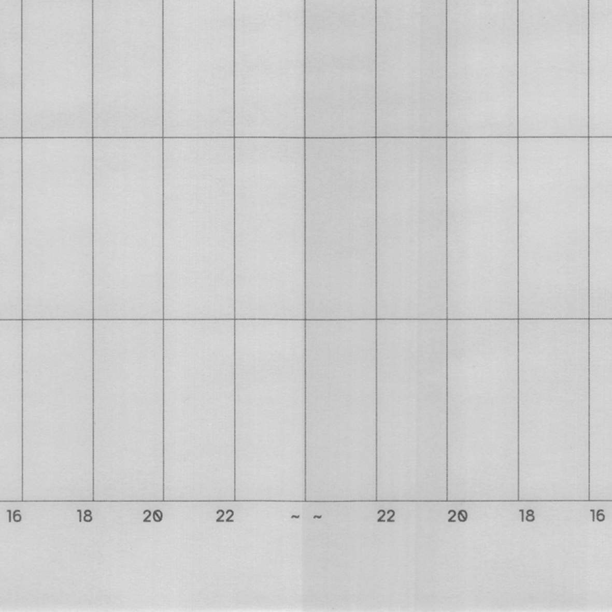

Itchy feet

인간은 바꿀 수 없지만 항상 바뀝니다. 오랜 세월 보지 못한 친구를 맞이할 때 유념해야합니다. 지극히 개인적인 경험에서 사회성을 포착해 지면에 인쇄된 시각 결과물을 만들었습니다.








인간은 바꿀 수 없지만 항상 바뀝니다. 오랜 세월 보지 못한 친구를 맞이할 때 유념해야합니다. 지극히 개인적인 경험에서 사회성을 포착해 지면에 인쇄된 시각 결과물을 만들었습니다.






